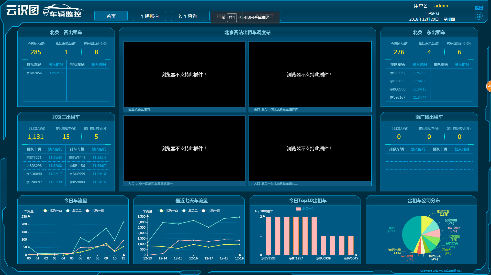

前端编程中面向过程的代码组织方式
- 当前在云识图中使用的代码组织方式
- 前端代码组织方式的四种境界
- 从境界1 到 进阶2的一个代码分析
- 底部是当前云识图页面展示的两个页面： 北京西站车辆系统首页 和 北京大数据平台首页
1. 当前在云识图中使用的代码组织方式
- 根据页面的操作来看，该设计页面设计呈现模块化
- 每个模块需要几个操作，1. 模块初始化 2. 获取数据并进行组织 3. interval 定时刷新数据。
- 代码组织方式 -- 根据每个模块的内容，进行渲染，并增加内容。
jQuery(function($){
var globalparam1, globalparam2, globalparam3;
model_fun1(params)//第一次调用
//定时调用数据
setInterval(function(){
model_fun1(params)
}, interval_sope)
function model_fun1(params){
getData(){
$.ajax(function(){
url:'',
data:{},
type:'GET',
success:function(data){
var code = data.code;
-- buiness logical
}
})
}
set_chart(obj, xarr, yarr){
var option = {
}
obj.clear()
obj.setOption(option, true)
}
}
})
前端代码组织方式的四种境界
- 基础-函数版
function a(){}
function b(){}
- 入门-字面量版
var obj = {
init:function(){
this.a()
this.b()
},
a:function(){},
b:function(){}
}
- 进阶
var hogo = {
ns : function(){};
}
hogo.ns('hogo.wx', {
init : function(){
this.a();
this.b();
},
a : function(){},
b : function(){}
});
hogo.wx.init();
- 提高 - 模块化版
define();
require();
4. 具有代表性的图片
